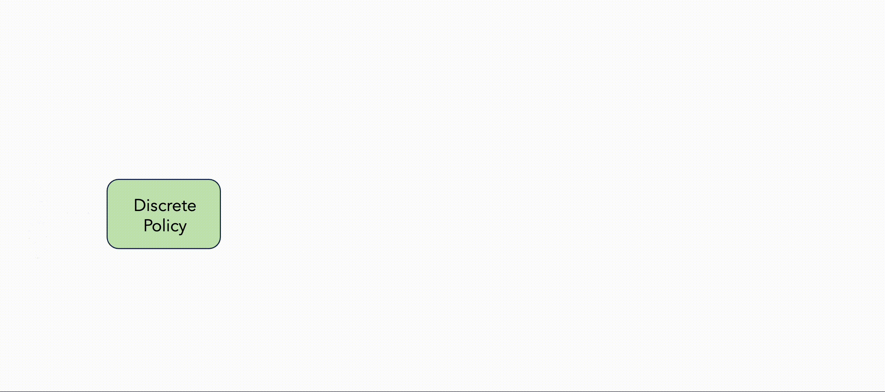
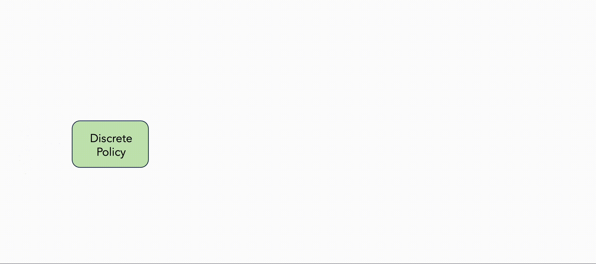

The offline reinforcement learning (RL) paradigm provides a general recipe to convert static behavior datasets of experience into policies that can perform better than the behavior policy that collected the data. While policy constraints, conservatism, and other methods for mitigating distributional shifts w.r.t. behavior datasets have made offline reinforcement learning more effective, the continuous action setting often necessitates various approximations for applying these techniques. Many of these challenges are greatly alleviated in discrete action settings, where offline RL constraints and regularizers can often be computed more precisely or even exactly. In this paper, we propose an adaptive scheme for action quantization. We use a VQ-VAE to learn state-conditioned action quantization, avoiding the exponential blowup that comes with naïve discretization of the action space. We show that several state-of-the-art offline RL methods such as IQL, CQL, and BRAC improve in performance on benchmarks when combined with our proposed discretization scheme. We further validate our approach on a set of challenging long-horizon complex robotic manipulation tasks in the robomimic environment where our discretized offline RL algorithms are able to improve upon their continuous counterparts by 2-3x in performance. Our project page is at saqrl.github.io.
 
